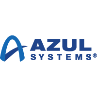
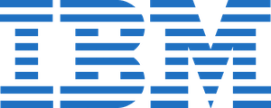
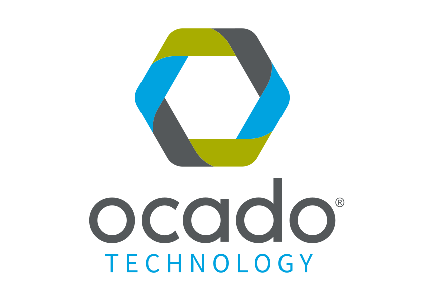
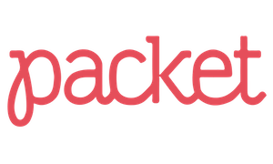
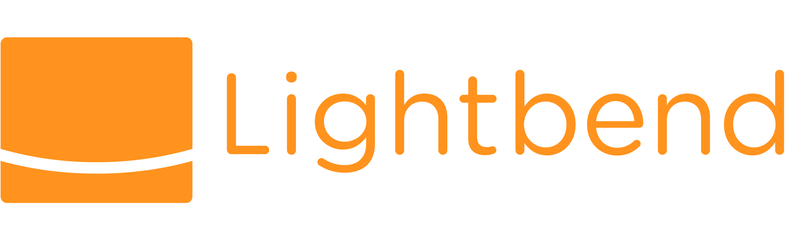
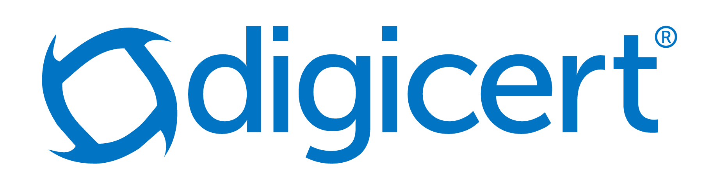

Sponsors
The AdoptOpenJDK Foundation is proud to receive contributions from many companies, both in the form of monetary contributions in exchange for membership or in-kind contributions for required resources.
We are currently looking for the following infrastructure:
Multiple build and test servers across various platforms that have significant CPU and memory. This will be used to quickly and continuously build and test multiple versions of OpenJDK.

The AdoptOpenJDK Foundation's Tier-1 infrastructure providers contribute the largest share of infrastructure to the Adopt OpenJDK build farm project. Without these companies, the project would not be able to provide the quality, speed and availability of test coverage that it does today. (Listed alphabetically).
|  | Since its founding in 2002, Azul Systems has been exclusively focused on Java, and on producing high quality JDKs, JREs, and JVMs. We are active contributors to OpenJDK, serve on the JCP Executive Committee and JSR expert groups, and are members or project leads in OpenJDK projects including the OpenJDK Vulnerability Group. Azul produces free community builds of OpenJDK with Zulu and provides commercial support for builds of OpenJDK with its Zulu Enterprise and Zulu Embedded offerings, which include timely security updates, bug fixes, long term availability & updates of builds, and access to our award-winning Support team. |
|  | For 20+ years, IBM has been one of the largest investors and contributors to the Java platform, and an active member of the developer community. IBM offers a comprehensive portfolio of solutions, services and systems for Java developers supporting mobile, web, cognitive, analytics and IoT. IBM’s Bluemix offers Java developers a robust, cloud-development platform to speed app development, including access to enterprise services and APIs, and scalable hosting in hybrid, public, dedicated and/or on premise environments. |
|
The London Java Community (LJC) is a group of Java enthusiasts who are interested in benefiting from shared knowledge in the industry. Through our forum and regular meetings developers can keep in touch with the latest industry developments, learn new
Java (& other JVM) technologies, meet other developers, discuss technical/non technical issues and network further throughout the Java Community.
The LJC has over 6000 members and holds a seat on the Executive Committee of the Java Community Process (JCP) - aka the Java standards body. The LJC is a leading member in both the Adopt a JSR and Adopt OpenJDK programmes to contribute to Java standards and the leading implementations behind those standards. |
|
| Microsoft Azure believes that all individuals and groups should be empowered with the full freedom and power of the cloud. Azure offers the trust, transparency, and humanity that all developer communities need to navigate, thrive, and endure in this increasingly cloud-powered world. Microsoft's commitment to Open Source communities extends to the Java ecosystem, and supporting the AdoptOpenJDK effort is part of our mission to empower developers of all programming languages. With Azure, Java developers can find Cloud solutions for developing, building, and running applications, in ways that will increase their productivity, and free them to do more. | |
|  | Ocado Technology develops the innovative software and systems that power the online grocery retail platforms of Ocado and Morrisons in the UK and other grocers worldwide. Through our Ocado Smart Platform, we aim to provide retail businesses around the world with an integrated end-to-end platform for e-commerce, fulfilment and logistics. Open source software, and in particular the Java language, have been critical aspects in our technology journey, enabling us to effectively develop and maintain world-class solutions. Java's adaptability has allowed us to apply it across our technology estate, from our award-leading online grocery store, through to our real-time warehouse control systems. We are proud to be sponsoring the AdoptOpenJDK project and helping to ensure that Java maintains its position as a leading language for many years to come. |
|  | Packet is passionate about building a better internet. Our specialty is automating fundamental infrastructure. With premium Intel and ARMv8 based server configurations that provision in 8 minutes or less, the Packet platform brings the promise of the virtualized cloud to bare metal - offering the ultimate in performance, portability, and scalability for modern workloads. The company also operates an advanced software defined network and offers private deployments for enterprise customers. Packet currently serves a global client base from data centers in Parsippany (NJ), Sunnyvale (CA), Amsterdam (NL) and Tokyo (JP). |
The AdoptOpenJDK Foundation's Tier-2 infrastructure providers fill essential gaps in architecture and operating system variations and shoulder some of the burden from the tier-1 providers, contributing to availability and speed in our CI system. (Listed alphabetically).
| Our cloud computing platform was built with simplicity at the forefront, so managing infrastructure is easy, whether your business is running one virtual machine or ten thousand. Digital Ocean gets out of your way so teams can build, deploy, and scale cloud applications faster and more efficiently. | |
| Triton is 100% open source and designed to eliminate cloud provider lock-in. With support for popular container management tools like Kubernetes, augmented by our own open source project ContainerPilot, we are working with the community to deliver simple to operate platform services that are open and portable. | |
| Linaro is leading collaboration on open source development in the ARM ecosystem. The company has over 250 engineers working on consolidating and optimizing open source software for the ARM architecture, including developer tools, the Linux kernel, ARM power management, and other software infrastructure. Linaro is distribution neutral: it wants to provide the best software foundations to everyone by working upstream, and to reduce non-differentiating and costly low level fragmentation. The effectiveness of the Linaro approach has been demonstrated by Linaro’s growing membership, and by Linaro consistently being listed as one of the top five company contributors, worldwide, to Linux kernels since 3.10. | |
| MacinCloud provides comprehensive "Mac in the Cloud" solutions: Cloud Mac for App developers and home users; Mac servers for enterprise builds and school classes. All backed by genuine Mac hardware hosted around the globe. Sign up and use a Mac in the Cloud! | |
| MacStadium is the leading managed Mac hosting solution in the world offering individuals and organizations of all sizes to colocate and rent dedicated Mac servers and Mac private cloud environments hosted in data centers around the world. We’re an experienced, driven team of technology enthusiasts striving to provide the best Mac hosting experience to all users. If you need a couple of Mac build servers, you can rent a Mac mini or Mac Pro. For many folks, including AdoptOpenJDK, this is a great route. For others interested in paying a bit more for automation and scalability, see Mac Private Cloud. | |
| Scaleway is a pioneer in the BareMetal cloud computing industry. Created in 2015, Scaleway is the sole cloud provider worldwide to provide on-demand BareMetal servers designed by their own engineering teams. All their components are carefully selected to always provide the most reliable and cost-effective solutions. Scaleway now offers a full range of Compute, Storage and Networking services for infrastructure of all sizes, from development platform to large-scale mission-critical deployments. For more information, visit scaleway.com. |
Companies that have provided donations to help with the build farm efforts. (Listed alphabetically).
|  |
(Listed alphabetically)
|  |  |